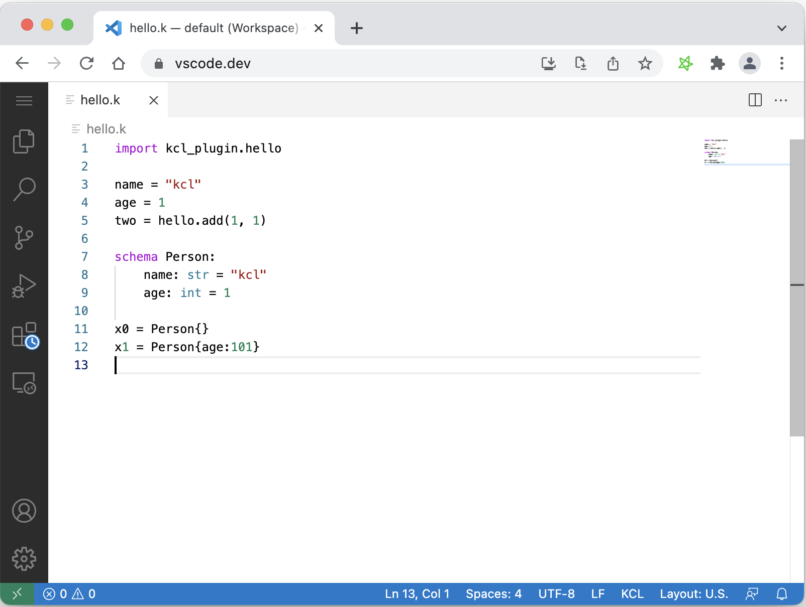
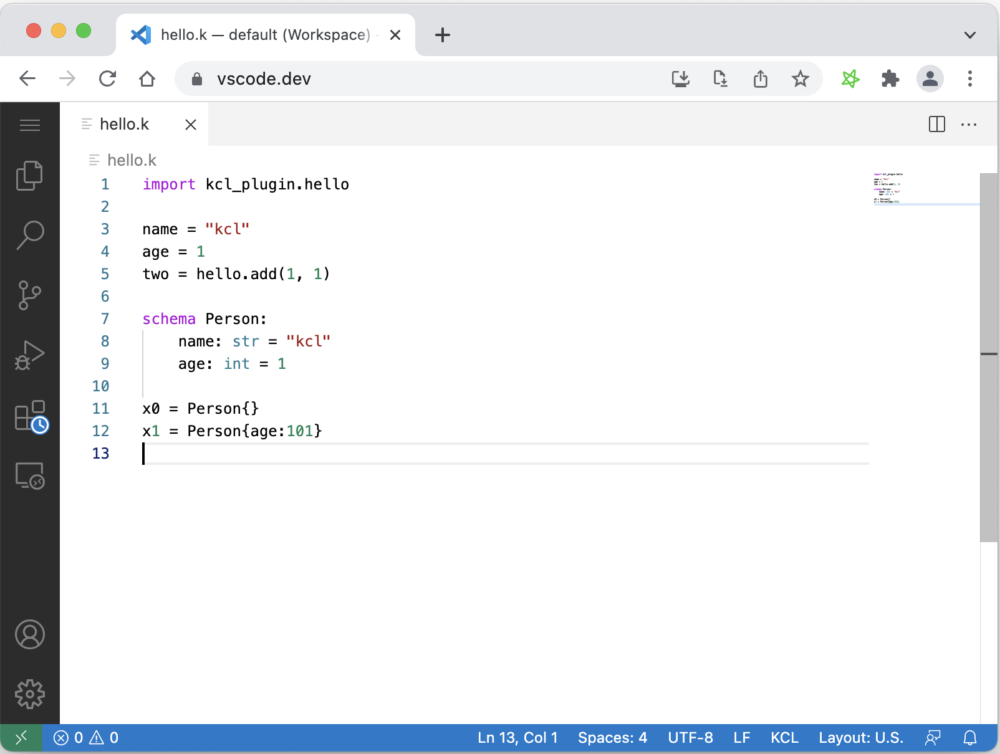

1.5 IDE 插件
为了提高 IDE 开发 KCL 的效率，Kusion 为 VS Code 在线版和本地版本提供了插件支持。在线版本可以从 https://vscode.dev 地址打开，然后安装“KCL for vscode.dev 插件”，效果如下:

本地 VS Code 可以安装完整的 KCL 插件，提供了高亮、自动补全（部分：关键字补全等）、跳转、悬停、大纲等功能。插件虽然不是 Kusion 必须的部分，但是可以提高效率推荐安装。
为了提高 IDE 开发 KCL 的效率，Kusion 为 VS Code 在线版和本地版本提供了插件支持。在线版本可以从 https://vscode.dev 地址打开，然后安装“KCL for vscode.dev 插件”，效果如下:

本地 VS Code 可以安装完整的 KCL 插件，提供了高亮、自动补全（部分：关键字补全等）、跳转、悬停、大纲等功能。插件虽然不是 Kusion 必须的部分，但是可以提高效率推荐安装。